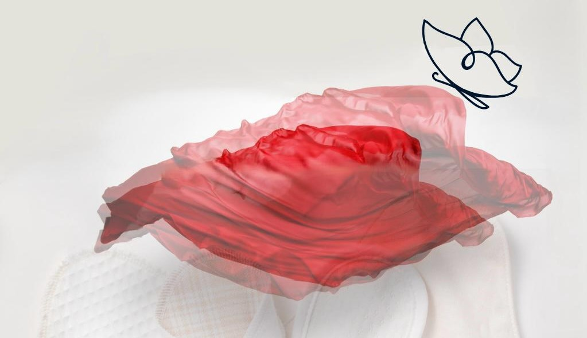

Our Mission
In Kakuma Refugee Camp, South Sudan and other underserved communities, many school-going girls miss classes every month because they lack access to affordable and safe menstrual hygiene products. This problem leads to poor academic performance, low self-esteem and eventually school dropouts, perpetuating a cycle of poverty and gender inequality.
Our solution is the Nyandior Pads Initiative, a community-driven project that provides free, reusable sanitary pads and menstrual health education to girls in need. By distributing eco-friendly pads and training girls on menstrual hygiene, we ensure that no girl is left behind simply because of her period.
While commercial pad brands are unaffordable and unsustainable for most families, our pads are washable, reusable for up to 12 months and locally made cutting down costs and environmental waste. Our model is scalable because we partner with local tailors and women’s groups, enabling decentralized production and empowering communities.
It costs us approximately $5 per girl to provide a full-year menstrual hygiene kit, including 4 reusable pads and a storage pouch. We cover these costs through corporate sponsorships, donor contributions and bulk partnerships with schools and NGOs. For example, with $500, we can support 100 girls for an entire year.
Social Impact: Improved school attendance, increased confidence among girls and reduced stigma around menstruation.
Environmental Impact: Every kit replaces over 150 disposable pads, helping reduce waste and pollution in fragile ecosystems like refugee camps.
The biggest assumptions behind our model have been validated through the following field observations and pilot tests:
Girls are eager to use reusable pads when trained properly.
Schools and parents are open to integrating menstrual health into learning.
Local tailors can be trained to make high-quality reusable pads.
Reusable pads are culturally acceptable and cost-effective in our context.
Community leaders and health workers support menstrual education and distribution.
With funding, we’ll achieve the following milestones:
Production: Train and employ 5 local tailors to make pads by December.
Distribution: Provide full kits and training to 150 girls in schools and refugee camps.
Awareness: Conduct 3 menstrual health sessions with students, parents and teachers.
Sustainability: Establish a small-scale production hub and seek bulk partnerships with schools and NGOs for long-term support.
DONATE NOW
Leave a comment